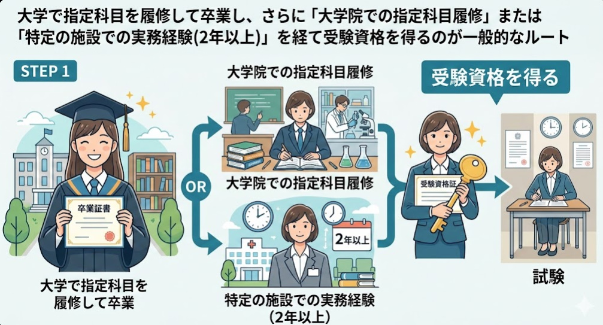

心のはたらきと行動を科学する。
「心理・福祉学科なら。大丈夫。」
心理学は「心のはたらき」と「行動」の科学です。目に見えない心という仕組みを、科学的な手法で分析し、理解することを目指します。本コースでは、日常生活から専門的な援助まで幅広く役立つ心理学を学びます。
人はなぜそのように行動するのか？自分自身や周囲の人の心の動きを論理的に理解します。
主観的な「思い込み」ではなく、実験や調査、データに基づいた客観的な分析力を身につけます。
カウンセリング技法や発達の知識など、人を支えるために不可欠な専門知識を習得します。
公認心理師は、2017年に施行された日本初の心理職の国家資格です。保健医療、教育、福祉、産業、司法など、社会のあらゆる場面で心の支援を行います。
※国家試験の受験資格を得るには、大学で指定科目を履修・卒業後、大学院での修了または特定の施設での実務経験が必要です。

心理の学びは、あらゆる業界で「人間理解のプロ」として重宝されます。
病院、福祉施設、児童相談所などでの心理相談業務。
スクールカウンセラーや教育相談センターでの相談業務。
人事、教育研修、商品企画など、心理の知識はビジネスにも直結します。